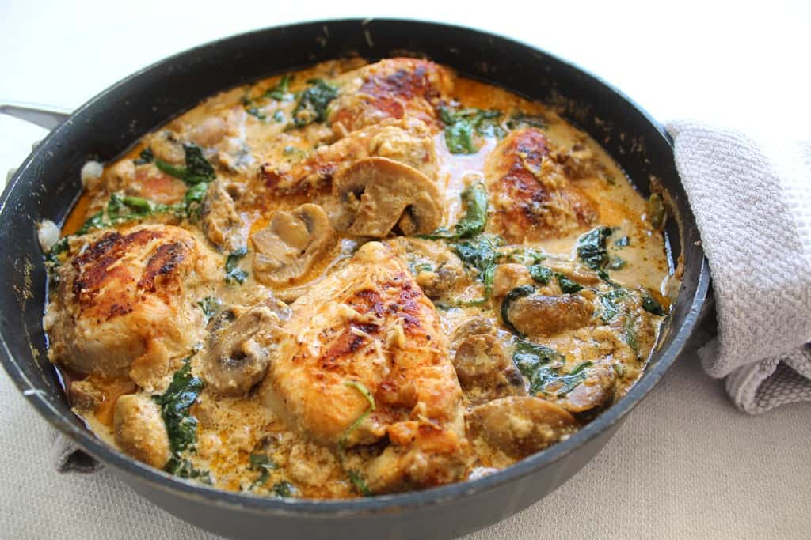

Creamy Garlic Butter Chicken with Spinach and Mushrooms

Ingredients Section
For the Chicken:
2 large chicken breasts (cut in half horizontally to make 4 fillets)
Salt and pepper (to taste)
1 tsp paprika (optional)
1 tsp garlic powder
2 tbsp olive oil
1 tbsp butter
For the Creamy Sauce
1 tbsp butter
4 cloves garlic (minced)
1 small onion (finely chopped)
1 cup mushrooms (sliced)
2 cups fresh spinach
1 cup heavy cream
½ cup grated Parmesan cheese
Salt and pepper (to taste)
1 tsp Italian seasoning (optional)
¼ cup chicken broth or water (for thinning, if needed)
Instructions Section:
1.Prepare the Chicken:
Season chicken breasts with salt, pepper, garlic powder, and paprika on both sides.
In a large skillet, heat 2 tbsp olive oil and 1 tbsp butter over medium-high heat.
Sear chicken fillets for about 4-5 minutes per side, or until golden brown and cooked through.
Remove from pan and set aside on a plate. Cover loosely with foil to keep warm.
2.Sauté the Vegetables:
In the same pan, add 1 tbsp butter.
Add minced garlic and chopped onion, and sauté until fragrant (about 1-2 minutes).
Add sliced mushrooms and cook until soft and browned (around 4-5 minutes).
3.Make the Cream Sauce:
Stir in heavy cream, Parmesan cheese, and Italian seasoning.
Reduce heat to low and simmer until the sauce thickens (about 3–5 minutes). Stir occasionally.
Add fresh spinach and stir until wilted.
Season with salt and pepper to taste.
(Optional: Add a splash of chicken broth or water to adjust the consistency.)
4.Combine & Serve:
Return the cooked chicken to the pan.
Spoon the creamy sauce and veggies over the chicken.
Simmer for 2–3 more minutes to let the flavors blend.
Serving Suggestions:
Serve hot over rice, mashed potatoes, pasta, or with a side of garlic bread